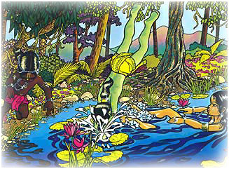
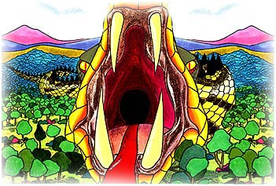

Un dia Gopal y sus amigos estaban jugando en el bosque
mientras un terrible y poderoso demonio llamado Agha
de quien poderos guerreros le temian, los observaba.
El odiaba a cualquiera sin razon alguna, y le
encantaba hacer el mal solo por malicia. Al verlos tan
felices decidio comerlos. Mientras los obserbava Agha
penso: "Si como a todos estos niños junto a Gopal, sus
padres en Vrindaban morirán de dolor!"

Agha se hizo mas y mas grande, hasta que media 8
millas de largo. El abrió su boca lo que mas pudo, y
esta era tan grande que parecía la cueva de una
montaña. Sus afilados colmillos parecían como picos de
la cueva, y su roja lengua como un camino. Sus ojos
resplandecian como el fuego. Agha permaneció inmovil,
con su boca abierta, esperando en el camino para
tragarlos a todos.